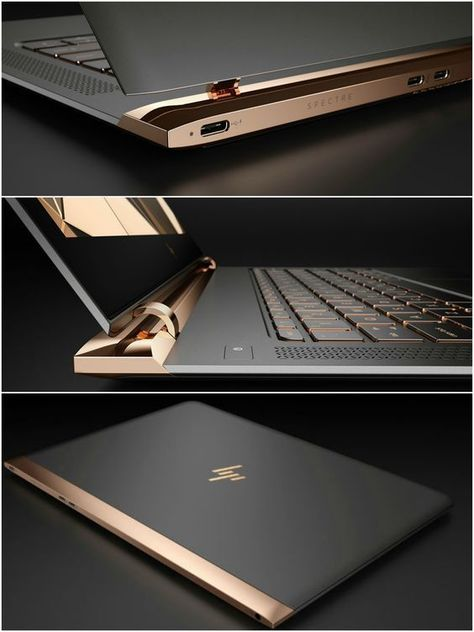
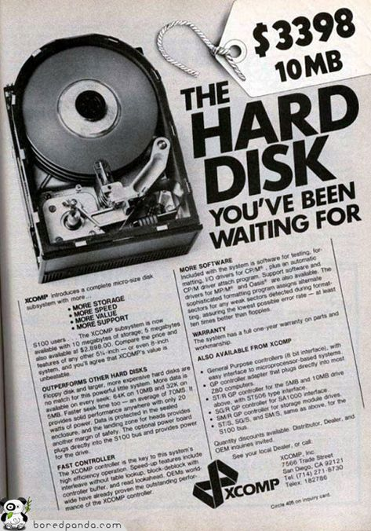

ABOUT THE STORE
Electronics Store – Shopping for Electronics Made Easy. Shopping for electronics can be a daunting task. With so many options and unknowns, it’s important to make sure you have the right information when choosing the perfect product for your needs. An electronic store can provide customers with both convenience and knowledge when it comes to purchasing the latest technology. Here is why shopping at an electronic store is the way to go.
Electronics stores are the ideal place to shop for all types of consumer electronics, from televisions and sound systems to computers and gaming devices. Stores stock numerous brands in many styles and sizes so that customers have plenty of options available when making their purchase decisions.
Electronics stores are the perfect place to shop for all kinds of consumer electronics. We offer a wide variety of products, unbeatable deals, and knowledgeable staff members who can provide expert advice.